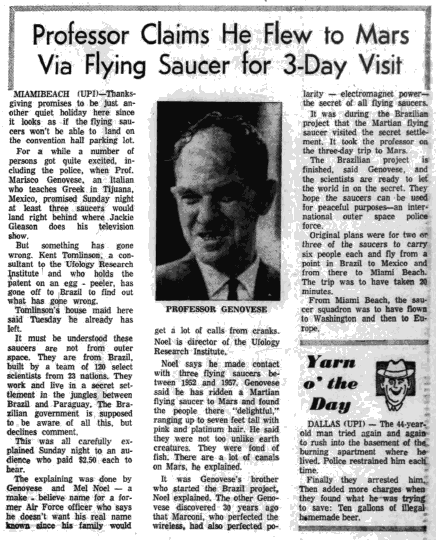

|  |
Miami Beach (UPI) — Thanksgiving promet de n'être qu'un banal congé paisible ici puisqu'il semble que les soucoupes volantes ne pourront pas atterrir sur le parking du centre de conférence.
Pendant un moment un certain nombre de personnes furent assez ferventes, y compris la police, lorsque le professeur Marisco Genovese, un italien enseignant le grec à Tijuana (Mexique), a promis que la nuit de dimanche au moins 3 soucoupes atterriraient juste derrière l'endroit où Jackie Gleason fait son émission télévisée.
Mais quelque chose n'a pas marché. Kent Tomlison, un consultant pour l'Institut de Recherche Ufologique et détenteur d'un brevet de pelage d'oeufs, est parti au Brésil essayer de trouver ce qu'il s'est mal passé.
La domestique de la maison de Tomilson ici a dit mardi qu'il était déjà parti.
On doit comprendre que ces soucoupes ne viennent pas de l'espace. Elles viennent du Brésil, construites par une équipe de 120 scientifiques sélectionnés de 23 nations. Ils travaillent et vivent dans une installation secrète dans les jungles entre le Brésil et le Paraguay. Le gouvernement brésilien est censé être au courant de tout ceci, mais n'a pas souhaité commenter.
Tout ceci fut méticuleusment expliqué dimanche soir à un public qui a payé $2,50 par personne.
L'explication fut donnée par Genovese et Mel Noel — un nom qui fait rêver pour un ancien officier de l'Air Force disant ne pas souhaiter que son vrai nom soit connu pour éviter que sa famille soit submergée d'appels de cinglés. Noel est directeur de l'Institut de Recherche Ufologique.
Noel dit avoir eut des contacts avec 3 soucoupes volantes entre 1952 et 1957, Genovese dit avoir été dans une
soucoupe volante martienne jusqu'à Mars et trouvé les gens là-bas délicieux
, faisant jusqu'à 7 pieds de haut
avec des cheveux roses et platine. Il dit qu'ils ne sont pas si différents de créatures terriennes. Ils adorent le
poisson. Il y a beaucoup de canaux sur Mars, a-t-il expliqué.
Ce fut le frère de Genovese qui démarra le projet au Brésil, a expliqué Noel. L'autre Genovese découvrit il y a 30 ans de cela que Marconi, qui avait perfectionné la transmission sans fil, avait aussi perfectionné la polarité — l'énergie électromagnétique — le secret de toutes les soucoupes volantes.
Ce fut durant le projet brésilien que la soucoupe volante martienne visita l'installation secrète. Elle embarqua le professeur pour un voyage de 3 j sur Mars.
Le projet brésilien est terminé, a dit Genovese, et les scientifiques sont prêts à laisser le monde accéder au secret. Ils espèrent que les soucoupes pourront être utilisées à des fins pacifiques — une force de police spatiale internationale.
Originellement les plans étaient que 2 ou 3 des soucoupes embaquent chacune 6 personnes et s'envolent d'un endroit au Brésil vers le Mexique puis de là vers Miami Beach. Le voyage devait durer 20 mn.
Depuis Miami Beach, l'escadron de soucoupes devait s'envoler vers Washington puis en Europe.